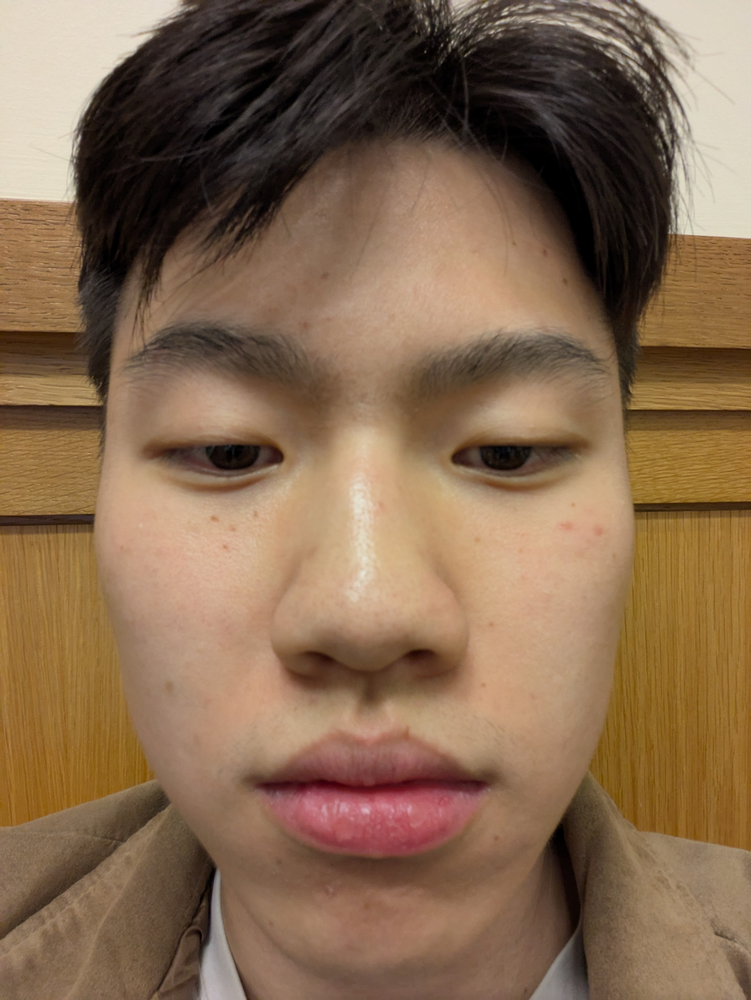
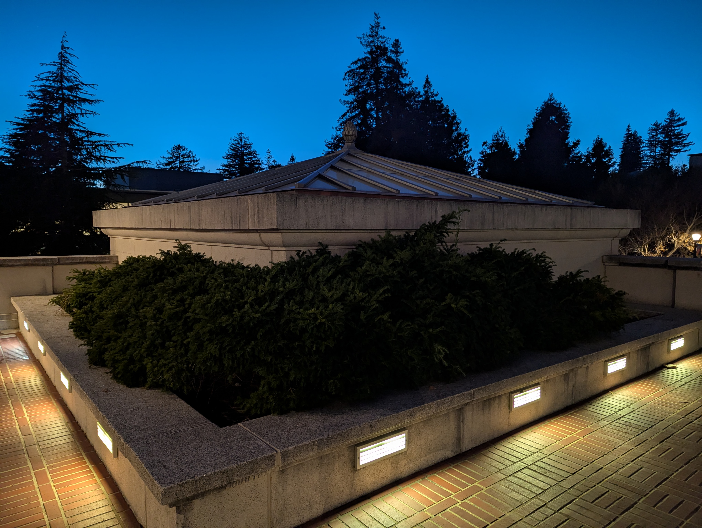
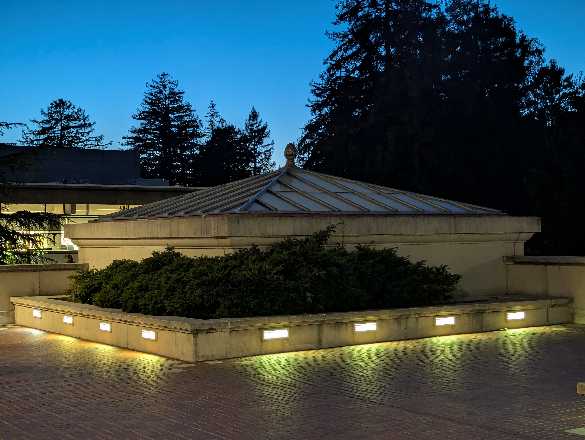

Part 1: Selfie—The Wrong Way vs. The Right Way

Compare the distorted close-up selfie with the zoomed-out version—notice how the perspective changes.
Part 2: Architectural Perspective Compression


See how zooming compresses perspective—compared to walking closer without zoom.
Part 3: The Dolly Zoom Effect
Below is the animated GIF of my dolly zoom sequence:

By walking back and zooming in while framing the subject the same size, you get the “Vertigo” effect.